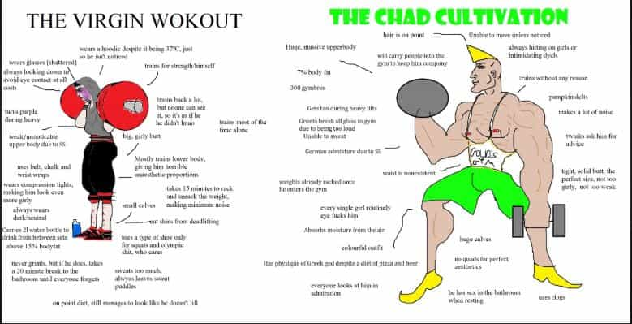
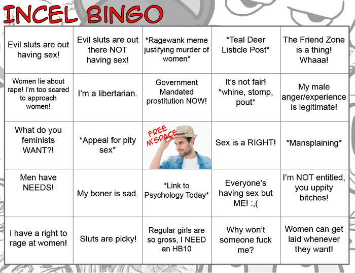

Ozz Kuragin is an author, musician and daygamer who starred in the 2017/2018 Daygame documentary: Hustle On. His upcoming autobiographical novel: "Millennials Among The Ruins" is scheduled for release in late 2018.


Game is getting tougher. Technology, dating apps and male thirst have all given women the advantage in the dating market. Hypergamy has also meant that the proportion of men getting little to no sex at all has increased. The incel phenomenon has now grown so large that even Mainstream Media outlets such as the BBC and CNN have started using the terms “Chad” and “Stacy.”
Furthermore, the advice found on Manosphere sites in the 2000s and the early 2010s is becoming dated. Simply cold approaching a girl is no longer good enough: she gets approached all the time. Self-improvement and hoping “the girls will come to you” is not good enough: girls are inundated with attention already, so they don’t need to actively seek out a partner, they can just swipe right on the best-looking guy they desire with the stroke of a finger.
Let’s face it: The incels, as loathsome as they may be, are right on some points. A 5’4” Pakistani man who has learned all of Mystery’s lines off by heart, has a successful online business and is competent in day and night game does not stand a chance against the six-foot Chad. Looks are a massive part of SMV and that cannot be denied. He can learn all the game he wants and get his bench press up to three plates, but Chad will still knock him out the park every time.

Having said that, all is not helpless. There are still valid means by which an ordinary-looking man can get his share of the pie without using money or lowering his standards. In this article, we shall examine three alternative ways which can be implemented to tilt the odds in an incel’s favor.
Routines are useful for enhancing productivity and organising time throughout the day. Usually, those with routine and order tend to be more successful than those without.
Having said that, becoming too attached to routines which lead nowhere can be more of a hindrance than a help. There is a fine line between persistence and insanity: it is critical to recognise when a pursuit is going nowhere.
For example, I would approach five girls every day after work on the same street. I got no success but kept at it because I thought: “practice makes perfect.” My game did not improve over a period of many months, in fact it gradually got worse as I got more frustrated and fatigued.
It was only when I ditched the daily approaches that I finally found some success: I took a break from day game and tried a bit of drunken night game just for a change and struck gold after months of nothing. I owe my blessing of fate down to a change in routine.
Incels tend to engage in repetitive behaviour without change: they have the same friends (if they’re lucky), go to the same bars and surf the internet all day and just hope sex will somehow fall out of the sky.

The best action an incel can take is to change his life: change friends, move to a new city, or even just try a different bar down the road. An incel should go out of his way to ensure he’s doing something new.
Incels are boring. Girls do not go for them because they offer no entertainment value. If a man cannot give girls anything extra in terms of looks or money, they need to bring something else to the table.
In the 21st Century, it is far more attractive to be entertaining than to be calm and collected. Millennial girls are drawn to the loudmouths and the show-offs on the dancefloor, not the average Joe with his stable income and nine to five.
This can be used to an incel’s advantage: if he is struggling with game, calibration and poor vibe, simply going into a club and creating a raucous is enough to generate attraction from some girls.
After learning long and complicated routines in game books, I was shocked at how much attraction I could generate by mindlessly ingesting large quantities of alcohol and other substances and charging on to the dancefloor without thinking. I didn’t need lines or lengthy routines based on the M3 model, I just needed to kiss the first girl that gave me eye contact and proximity.
My desk, yesterday
Acting recklessly is fun, takes no skill and is perfectly fitting for the modern West. I therefore advise Incels to try this out, sometimes just being on the right dancefloor at the right time is good enough.
Incels complain that sex is impossible because girls sleep around with all the Chads at the top of the hierarchy, whilst leaving nothing for the bottom 80%.
Thankfully, both boys and girls find a way round this: they start their own social circles based around niche interests and subcultures. These little groups are not only a great way to enjoy various hobbies together, but they are crucibles of sexual frustration.
The cosplay, goth and fetish scenes (needless to say) are notorious for being havens for promiscuity and they all hold meetups and club nights on a regular basis.
I have had a large amount of success in the goth scene through social connections and night game: I often find running game in goth clubs far easier than competing with the Chads on the dancefloor in the R&B club across the street.
My advice to the incel would be to start attending various niche events: look up niche club nights, go to munches (fetish meetups) and go to Comicon conventions. Very often, little to no game is needed to succeed, it is often sufficient to just be socially calibrated.
In these weird, modern times, entertainment is king. Long gone are the days where temperance and patience were attractive qualities to have.
Improving charisma, looks and status takes a lot of time in our fast-moving, highly competitive age. Simply telling an incel to learn game, read books and approach women is not enough: they may potentially spend years on this without getting anywhere.
It is far more efficient just to tell an incel to go off the rails a little. Join in the fun and capitalize on the narrow attention spans of our generation. Scrap the routines, join a niche social circle, go crazy and see how many girls show you interest as a result.